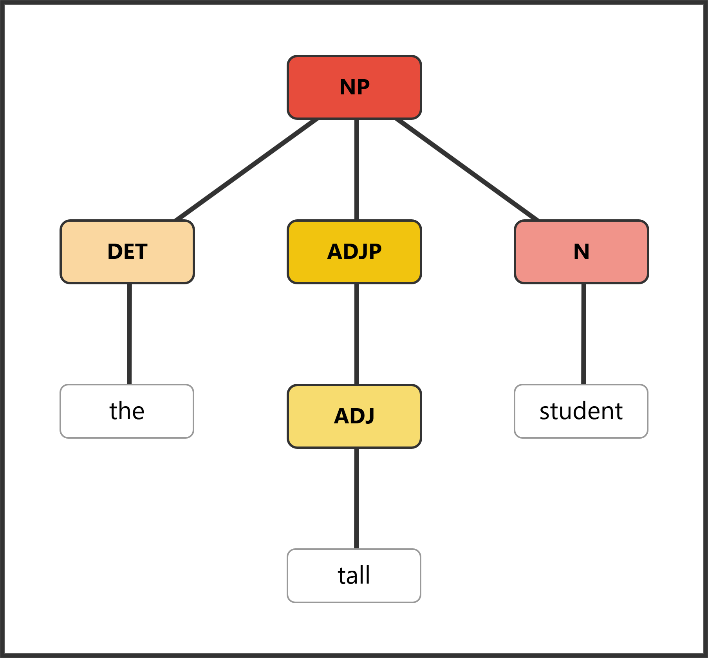
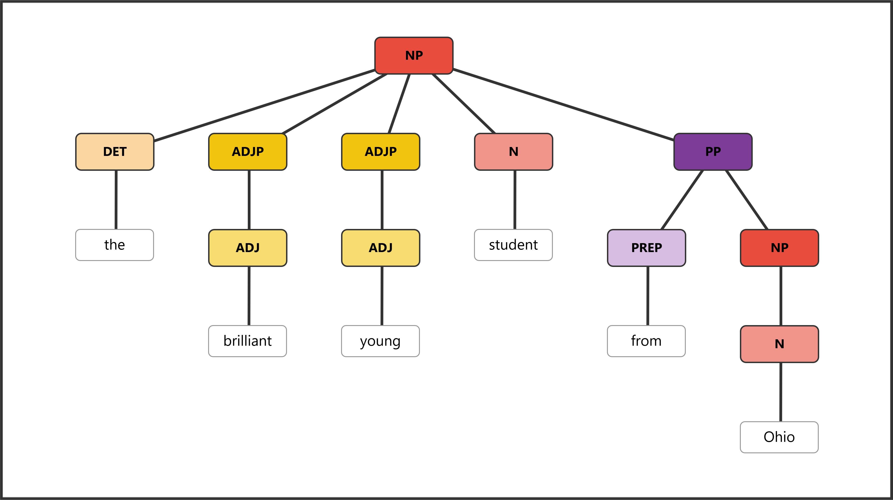

Section 5.4 Nouns
Nouns are the naming words of language—they identify the people, places, things, concepts, and ideas we talk about. Nouns are also the most common word class in English, making up roughly 37% of words in typical texts. Every sentence has at least one noun (or pronoun standing in for a noun), and many sentences have several. But nouns do far more than simply label concrete objects. They name everything that human beings can think about, experience, or imagine—from the tangible realities of everyday life to the most abstract reaches of philosophy and emotion.
Consider the enormous range of semantic information that nouns convey. Concrete nouns name entities we can perceive with our senses: people (teacher, doctor, child), places (Paris, kitchen, forest), and physical objects (table, car, river). Abstract nouns, on the other hand, name things we cannot touch or see directly: ideas (freedom, justice, democracy), emotions (happiness, anger, grief), qualities (beauty, strength, intelligence), and events (arrival, destruction, celebration).
What makes nouns especially interesting is that they can name actions (destruction, swimming, departure), states (happiness, confusion, awareness), and relationships (friendship, partnership, rivalry). When we say The destruction of the city was devastating, the word destruction names an event—something that happened—yet grammatically it behaves exactly like any other noun. This vast semantic range is precisely why the traditional "person, place, thing, or idea" definition is inadequate. It tries to capture meaning in a tidy formula, but the kinds of meaning that nouns express resist such simple categorization.
Why Semantic Definitions Can Mislead.
The traditional definition of nouns—"words that name people, places, things, or ideas"—works much of the time. Teacher, Paris, table, and freedom are all nouns. But meaning can mislead us. Is destruction a "thing"? What about arrival or swimming? These are nouns too, but they seem to name actions rather than objects.
The problem runs deeper than a few awkward examples. Consider how many nouns describe processes or activities: investigation, negotiation, performance, growth. These words name things that happen over time—they are semantically closer to verbs than to the prototypical "things" that the traditional definition envisions. Or consider nouns like absence, silence, and emptiness, which name the lack of something. Can an absence really be called a "thing" or an "idea"? Technically perhaps, but the label becomes so stretched as to be meaningless.
There is also the problem of overlap between categories. Love can be a noun (Their love was strong) or a verb (They love each other). Run can be a verb (She runs daily) or a noun (She went for a run). If nouns are "things" and verbs are "actions," how do we handle words that seem to be both? The answer is that we do not rely on meaning alone. Meaning gives us a starting intuition, but grammar gives us certainty.
The reliable way to identify nouns is through their grammatical behavior—specifically, through tests that reveal their morphological and syntactic properties.
Morphological Tests for Nouns.
Morphological tests examine what forms a word can take. Nouns have distinctive morphological properties that set them apart from other word classes.
Test 1: Plural formation
Nouns can typically be made plural. This is perhaps the most reliable morphological test for nouns:
-
book → books
-
child → children
-
analysis → analyses
-
happiness → happinesses (rare but grammatical)
If you can pluralize a word, it’s almost certainly a noun. Note that some nouns resist pluralization (mass nouns like water, information), but the fact that we can even ask the question "Can this be plural?" suggests noun-hood.
Test 2: Possessive marking
Nouns can take the possessive marker ’s:
-
the dog’s tail
-
Maria’s book
-
the committee’s decision
Other word classes cannot take this marker: we don’t say ~~the happy’s effect~~ or ~~the quickly’s result~~.
Test 3: Noun-forming suffixes
If a word ends in certain suffixes, it’s likely a noun. These suffixes convert other word classes into nouns:
| Suffix | Examples |
|---|---|
| -tion/-sion | action, decision, conclusion |
| -ness | happiness, awkwardness, cleverness |
| -ity | curiosity, generosity, ambiguity |
| -ment | government, amazement, establishment |
| -er/-or | teacher, actor, writer |
When you see these endings, think "noun."
Syntactic Tests for Nouns.
Syntactic tests examine how a word behaves in sentences. Where can the word appear? What other words can accompany it?
Test 1: The determiner test
Nouns can follow words like a, the, this, my, and every. These words (called determiners) specifically introduce nouns:
-
the proposal
-
a happiness
-
every decision
This test is powerful because determiners exclusively precede nouns. If the or a can go in front of a word, that word is functioning as a noun.
Test 2: The adjective modification test
Nouns can be modified by adjectives—words that describe qualities:
-
the new proposal
-
a great happiness
-
every important decision
Adjectives slot in between the determiner and the noun. If a word can appear in the position after an adjective, it’s behaving as a noun.
Test 3: The pronoun replacement test
A noun (along with its modifiers) can be replaced by a pronoun like it, they, or she:
-
The new proposal → It
-
My older brother → He
-
Those expensive books → They
This test helps identify noun phrases—groups of words built around a noun.
Test 4: The subject/object position test
Nouns naturally fill the subject and object slots in sentences:
-
Subject: Books are expensive.
-
Direct object: I bought books.
-
Object of preposition: I learned from books.
Noun Phrases: How Nouns Work in Sentences.
Nouns rarely appear alone. Instead, they form the center of noun phrases (NP)—groups of words built around a noun head. Understanding noun phrases is essential because it’s the phrase, not just the noun, that fills grammatical roles like subject and object.
A simple noun phrase:

[NP [DET the] [ADJP [ADJ tall]] [N student]]
A simple noun phrase with determiner, adjective, and head noun.
The noun student is the head—the essential word that determines the phrase type. The determiner the and adjective tall are pre-modifiers that add information about which student we mean.
A larger noun phrase with post-modification:

[NP [DET the] [ADJP [ADJ brilliant]] [ADJP [ADJ young]] [N student] [PP [PREP from] [NP [N Ohio]]]]
A complex noun phrase with multiple modifiers.
Here we have multiple pre-modifiers (the, brilliant, young) and a prepositional phrase post-modifier (from Ohio). Notice how the PP contains its own NP (Ohio)—phrases nest inside phrases.
Pre-modifiers in noun phrases include:
-
Determiners: the, a, my, this, every
-
Adjectives: tall, beautiful, old, interesting
-
Other nouns (functioning adjectivally): coffee (in coffee table), history (in history professor)
Post-modifiers in noun phrases include:
-
Prepositional phrases: the man in the hat, a book about linguistics
Identifying the Head Noun.
The head noun is the word you cannot remove. Test by eliminating words one at a time:
The experienced history teacher from the local high school
-
Remove the: experienced history teacher from the local high school ✓
-
Remove experienced: history teacher from the local high school ✓
-
Remove history: teacher from the local high school ✓
-
Remove from the local high school: teacher ✓
-
Remove teacher: ??? ✗
The head is teacher. Everything else modifies it.
Subclasses of Nouns.
Not all nouns behave identically. Two important distinctions affect how nouns can be used.
Common vs. Proper Nouns
-
Common nouns name general categories: city, teacher, book
-
Proper nouns name specific, unique entities: Chicago, Professor Smith, Friday
Proper nouns are capitalized and often don’t take determiners: Chicago is large (not ~~The Chicago~~). When a proper noun does take a determiner, it often signals a different meaning: the Amazon (river) vs. Amazon (company).
Count vs. Mass Nouns
-
Count nouns refer to discrete, countable entities: book/books, idea/ideas
-
Can be pluralized: three books
-
Take a/an: a book
-
Take number words: several ideas
-
Mass nouns refer to undifferentiated substances or concepts: water, information, furniture
-
Cannot be pluralized: ~~informations~~, ~~furnitures~~
-
Cannot take a/an: ~~a furniture~~
-
Take quantity words instead: some water, much information